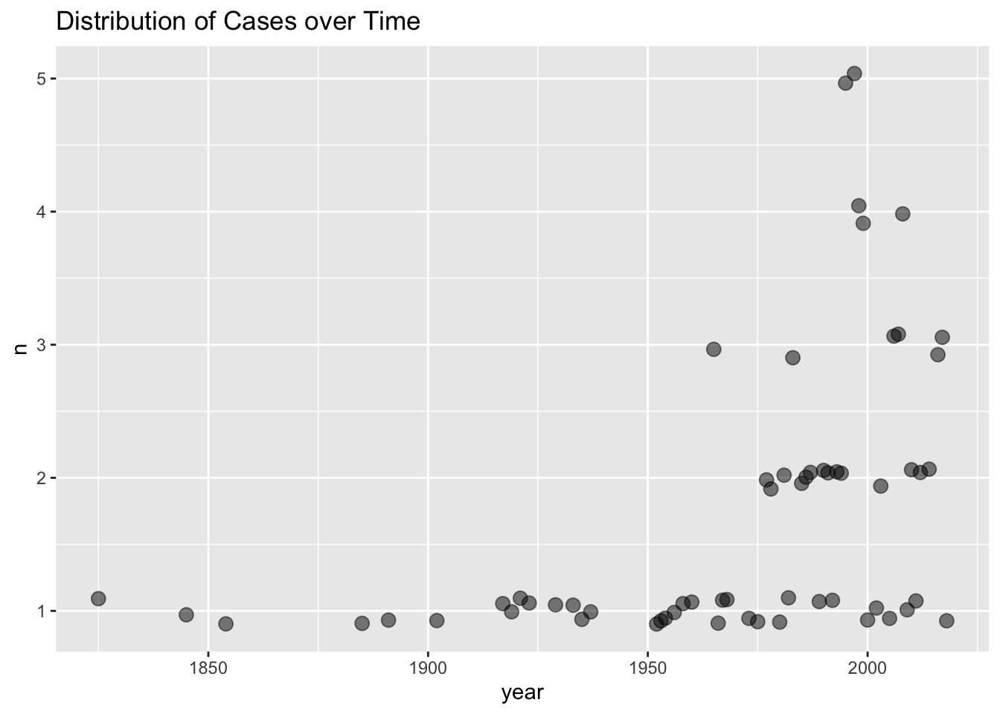
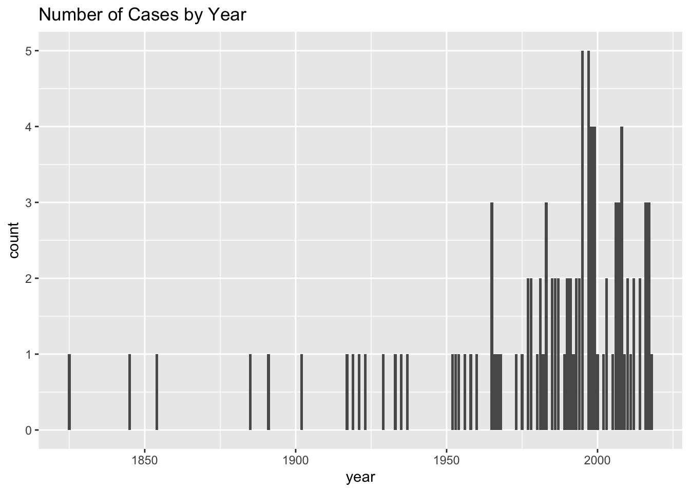
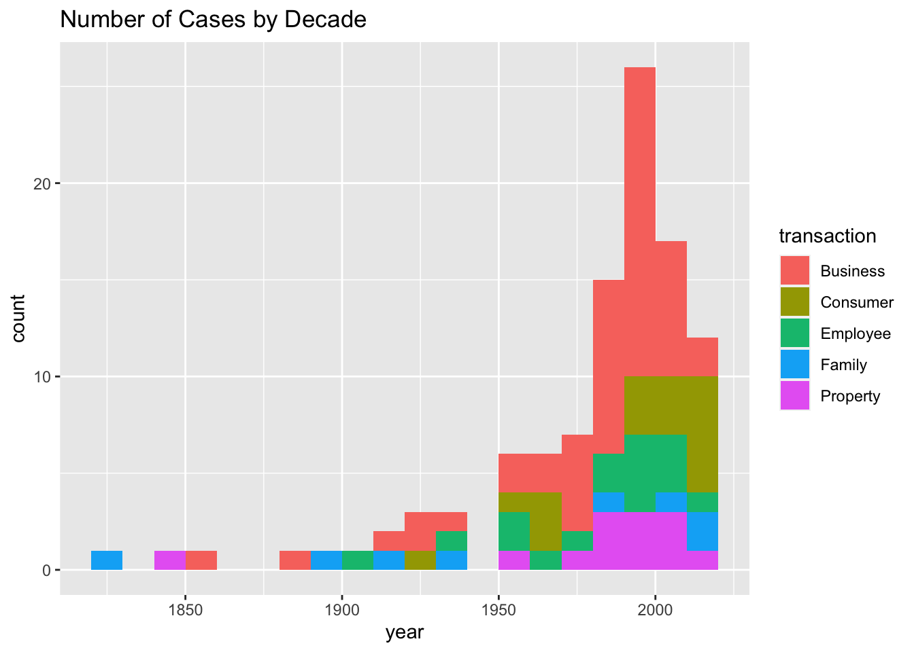
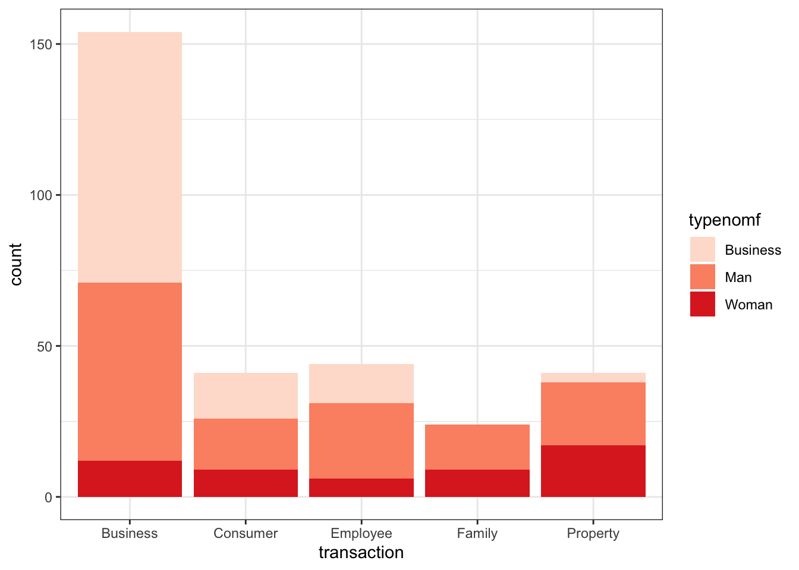
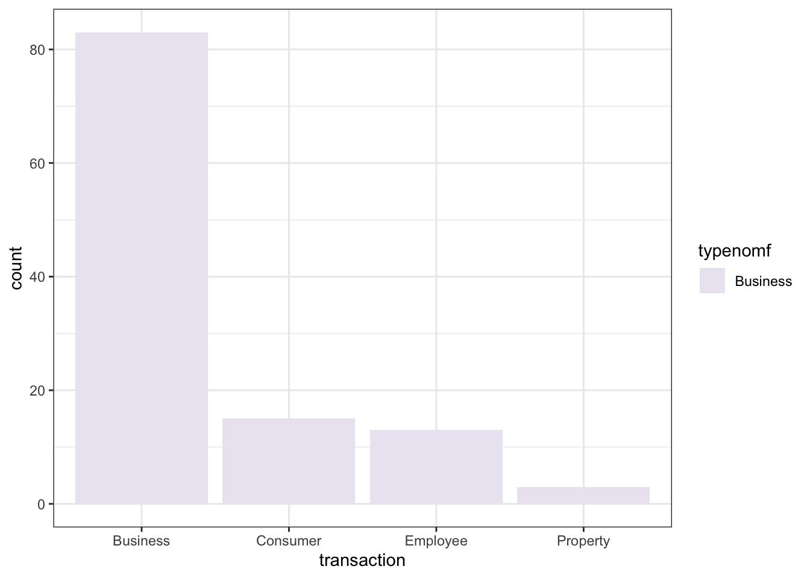
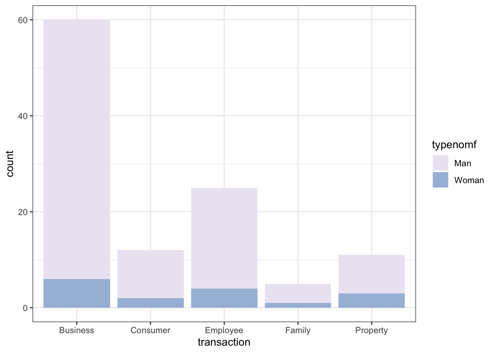
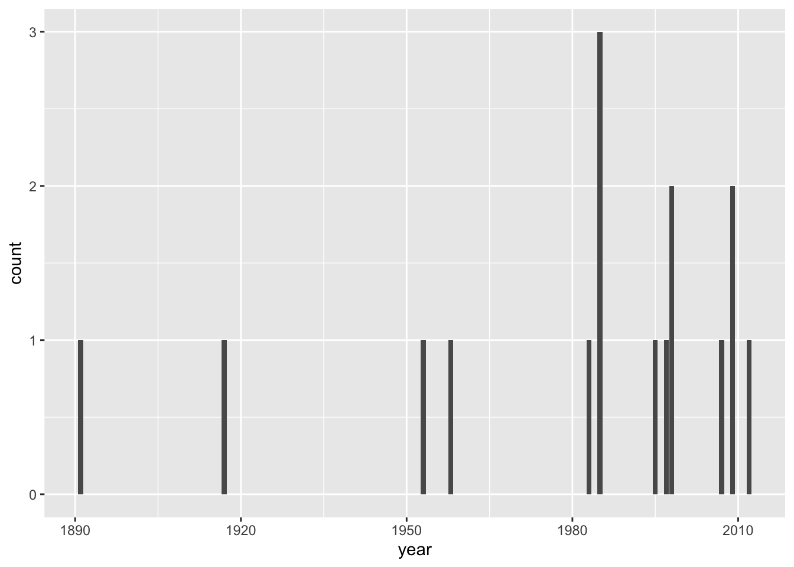
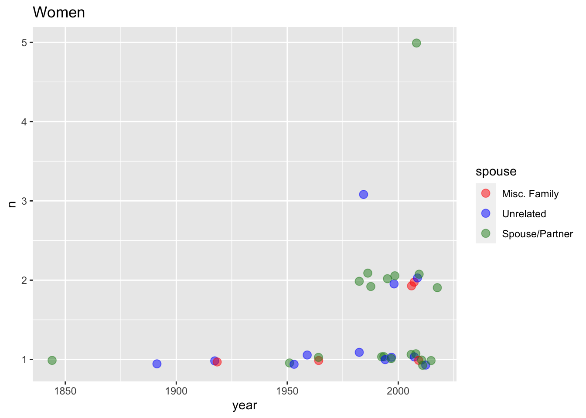
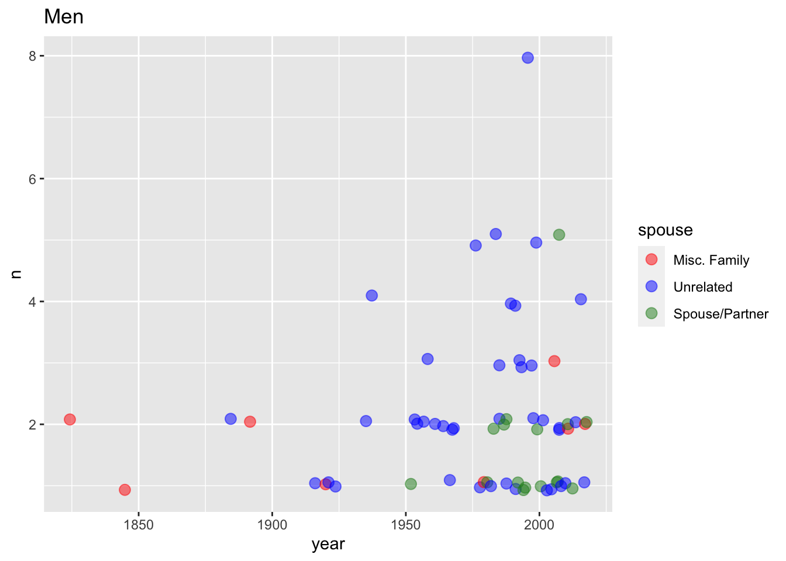
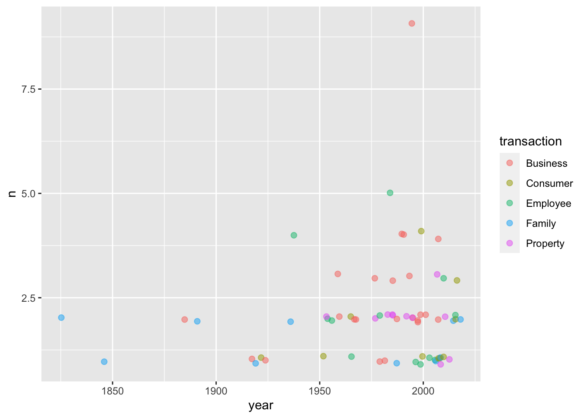

library(tidyverse)## ── Attaching packages ───────────────────────────────────────────────── tidyverse 1.3.0 ──## ✓ ggplot2 3.3.2 ✓ purrr 0.3.4
## ✓ tibble 3.0.3 ✓ dplyr 1.0.2
## ✓ tidyr 1.1.2 ✓ stringr 1.4.0
## ✓ readr 1.3.1 ✓ forcats 0.5.0## ── Conflicts ──────────────────────────────────────────────────── tidyverse_conflicts() ──
## x dplyr::filter() masks stats::filter()
## x dplyr::lag() masks stats::lag()library(readxl)
library(plotly)##
## Attaching package: 'plotly'## The following object is masked from 'package:ggplot2':
##
## last_plot## The following object is masked from 'package:stats':
##
## filter## The following object is masked from 'package:graphics':
##
## layoutcontracts <- read_excel("/Users/professorserrano/Desktop/Documents/Video Essays/Law/contracts_gender_r_2.xlsx")
defs <- read_excel("/Users/professorserrano/Desktop/Documents/Video Essays/Law/defs_r.xlsx")
plfs <- read_excel("/Users/professorserrano/Desktop/Documents/Video Essays/Law/plfs_r.xlsx")
parties <- read_excel("/Users/professorserrano/Desktop/Documents/Video Essays/Law/parties_r.xlsx")
cites <- read_excel("/Users/professorserrano/Desktop/Documents/Video Essays/Law/cites_for_contracts.xlsx")
contracts %>%
group_by(year) %>%
count() %>%
ggplot() +
geom_point(mapping=aes(year,n),alpha = 0.5, size = 3, position = position_jitter(w = 0, h = 0.1)) +
labs(title = "Distribution of Cases over Time")
contracts %>%
group_by(year) %>%
ggplot() +
geom_bar(mapping=aes(year)) +
labs(title = "Number of Cases by Year")
contracts %>%
group_by(year) %>%
ggplot() +
geom_histogram(mapping=aes(year,fill = transaction),breaks = c(1820,1830,1840,1850,1860,1870,1880,1890,1900,1910,1920,1930,1940, 1950, 1960,1970,1980,1990,2000,2010,2020)) +
labs(title = "Number of Cases by Decade")
names(cites) <- c("page","cite")
parties <- parties %>%
full_join(cites, by = "page")
contracts %>%
filter(transaction == "Property") %>%
select(transaction, page, cite)## # A tibble: 13 x 3
## transaction page cite
## <chr> <dbl> <chr>
## 1 Property 47 Lonergan v. Scolnick, 129 Cal. App. 2d 179 (1954).
## 2 Property 51 Normile v. Miller, 313 N.C. 98 (1985).
## 3 Property 227 Kirksey v. Kirksey, 8 Ala. 131 (1845)
## 4 Property 228 Harvey v. Dow, 962 A.2d.322 (Me. 2008).
## 5 Property 237 King v. Trustees of Boston Univ., 420 Mass. 52 (1995)
## 6 Property 266 Berryman v. Kmoch, 221 Kan. 304 (1977)
## 7 Property 357 Beaver v. Brumlow, 148 N.M. 172 (N.M. Ct. App. 2010)
## 8 Property 381 Buffaloe v. Hart, 114 N.C. App 52 (1994).
## 9 Property 572 Dodson v. Shrader, 824 S.W.2d 545 (Tenn. 1992)
## 10 Property 579 Sparrow v. Demonico, 461 Mass. 322 (2012)
## 11 Property 622 Hill v. Jones, 151 Ariz. 81 (1986)
## 12 Property 650 Higgins v. Super. Ct. of Los Angeles County, 140 Cal. App.…
## 13 Property 720 Lenawee County Board of Health v. Messerly, 417 Mich. 17 (…names(parties)## [1] "page" "year" "transaction" "party1" "typenomf"
## [6] "typemf" "spouse" "side" "cite"parties## # A tibble: 330 x 9
## page year transaction party1 typenomf typemf spouse side cite
## <dbl> <dbl> <chr> <chr> <chr> <chr> <chr> <chr> <chr>
## 1 18 1923 Business Allen Man Man N π Allen v. Bissi…
## 2 21 2017 Consumer Spencer… Man Man N π Meyer v. Uber …
## 3 37 1952 Consumer Calvin … Man Man Y π Ray v. William…
## 4 37 1952 Consumer Katheri… Woman Woman Y π Ray v. William…
## 5 47 1954 Property Lonergan Man Man N π Lonergan v. Sc…
## 6 51 1985 Property Michael… Man Man N π Normile v. Mil…
## 7 51 1985 Property Wawie K… Unknown Unkno… N π Normile v. Mil…
## 8 51 1985 Property Segal Unknown Unkno… N π Normile v. Mil…
## 9 51 1985 Property Gladys … Woman Woman N π Normile v. Mil…
## 10 61 1998 Employee Mary El… Woman Woman N π Cook v. Colwel…
## # … with 320 more rowsparties %>%
filter(typenomf == "Woman" | typenomf == "Man" | typenomf == "Business") %>%
ggplot() +
geom_bar(mapping = aes(transaction,fill = typenomf)) +
scale_fill_brewer(palette = 14) +
theme_bw()
parties %>%
filter(typenomf == "Woman" | typenomf == "Man") %>%
ggplot() +
geom_bar(mapping = aes(transaction,fill = typenomf)) +
scale_fill_brewer(palette = 18) +
theme_bw()
parties %>%
filter(typenomf == "Business" ) %>%
ggplot() +
geom_bar(mapping = aes(transaction,fill = typenomf)) +
scale_fill_brewer(palette = 9) +
theme_bw()
parties %>%
filter(typenomf == "Woman" | typenomf == "Man" ) %>%
filter(spouse == "N") %>%
ggplot() +
geom_bar(mapping = aes(transaction,fill = typenomf)) +
scale_fill_brewer(palette = 9) +
theme_bw()
parties %>%
filter(typenomf == "Woman") %>%
filter(spouse == "N") %>%
ggplot() +
geom_bar(aes(year))
Gender graphs number of people per year with family status color bigger dots
parties %>%
filter(typenomf == "Woman") %>%
group_by(year, spouse) %>%
count() %>%
ggplot(aes(year,n, color = spouse)) +
geom_point(alpha = 0.5, size = 3, position = position_jitter(w = 1, h = 0.1)) +
scale_color_manual(values=c("red","blue","forestgreen"), labels = c("Misc. Family","Unrelated","Spouse/Partner")) +
labs(title = "Women")
parties %>%
filter(typenomf == "Man") %>%
group_by(year, spouse) %>%
count() %>%
ggplot(aes(year,n, color = spouse)) +
geom_point(alpha = 0.5, size = 3, position = position_jitter(w = 1, h = 0.1)) +
scale_color_manual(values=c("red","blue","forestgreen"), labels = c("Misc. Family","Unrelated","Spouse/Partner")) +
labs(title = "Men")
Gender graphs number of people per year with transaction color
parties %>%
filter(typenomf == "Man") %>%
group_by(year, transaction) %>%
count() %>%
ggplot(aes(year,n, color = transaction, color = gender)) +
geom_point(alpha = 0.5, size = 2, position = position_jitter(w = 1, h = 0.1))## Warning: Duplicated aesthetics after name standardisation: colour
blah <- parties %>%
filter(typenomf == "Woman") %>%
group_by(year, transaction) %>%
mutate(n = n()) %>%
ggplot(aes(year,n, color = transaction, color = transaction,text = paste(party1," ", typenomf, " ", side))) +
geom_point(alpha = 0.5, size = 2, position = position_jitter(w = 1, h = 0.1))## Warning: Duplicated aesthetics after name standardisation: colourggplotly(blah, tooltip = "text") parties %>%
filter(typemf == "MBusiness" | typemf == "FBusiness")## # A tibble: 23 x 9
## page year transaction party1 typenomf typemf spouse side cite
## <dbl> <dbl> <chr> <chr> <chr> <chr> <chr> <chr> <chr>
## 1 165 1998 Business Princess… Business FBusin… N π Princess Cru…
## 2 184 2007 Business Paul Got… Business MBusin… N π Paul Gottlie…
## 3 274 1933 Business James Ba… Business MBusin… N π James Baird …
## 4 285 1998 Business Pop's Co… Business MBusin… N π Pop's Cones,…
## 5 757 1998 Business Mel Fran… Business MBusin… N π Mel Frank To…
## 6 849 1995 Business Truman L… Business MBusin… N π Truman L. Fl…
## 7 949 2003 Business Zapata H… Business MBusin… N π Zapata Herma…
## 8 1123 1986 Business Sally Be… Business FBusin… N π Sally Beauty…
## 9 1123 1986 Business Alberto-… Business MBusin… N π Sally Beauty…
## 10 37 1952 Consumer William … Business MBusin… N ∆ Ray v. Willi…
## # … with 13 more rowsparties %>%
filter(spouse == "Y") %>%
group_by(typenomf) %>%
count()## # A tibble: 2 x 2
## # Groups: typenomf [2]
## typenomf n
## <chr> <int>
## 1 Man 26
## 2 Woman 30parties %>%
filter(transaction == "Property", typenomf == "Business")## # A tibble: 3 x 9
## page year transaction party1 typenomf typemf spouse side cite
## <dbl> <dbl> <chr> <chr> <chr> <chr> <chr> <chr> <chr>
## 1 650 2006 Property American … Business Busine… N ∆ Higgins v. S…
## 2 650 2006 Property Disney/AB… Business Busine… N ∆ Higgins v. S…
## 3 650 2006 Property Lock and … Business Busine… N ∆ Higgins v. S…parties %>%
filter(spouse != "Y", spouse != "F", typenomf == "Woman")## # A tibble: 16 x 9
## page year transaction party1 typenomf typemf spouse side cite
## <dbl> <dbl> <chr> <chr> <chr> <chr> <chr> <chr> <chr>
## 1 51 1985 Property Gladys H… Woman Woman N π Normile v. Mi…
## 2 61 1998 Employee Mary Ell… Woman Woman N π Cook v. Colwe…
## 3 102 1891 Family Hamer Woman Woman N π Hamer v. Sidw…
## 4 197 2009 Consumer Mary E. … Woman Woman N π Defontes v. D…
## 5 197 2009 Consumer Julianne… Woman Woman N π Defontes v. D…
## 6 277 1958 Business Mrs. Joh… Woman Woman N π Drennan v. St…
## 7 285 1998 Business Brenda T… Woman Woman N π Pop's Cones, …
## 8 368 1997 Employee Kathleen… Woman Woman N π Alaska Dem. P…
## 9 579 2012 Property Frances … Woman Woman N π Sparrow v. De…
## 10 51 1985 Property Hazel Mi… Woman Woman N ∆ Normile v. Mi…
## 11 154 2007 Business Lisa Fle… Woman Woman N ∆ E.C. Styberg …
## 12 347 1953 Employee Elizabet… Woman Woman N ∆ Crabtree v. E…
## 13 482 1917 Business Lucy, La… Woman Woman N ∆ Wood v. Lucy,…
## 14 849 1995 Business Sara Lee… Woman Woman N ∆ Truman L. Fla…
## 15 889 1983 Employee Elaine L… Woman Woman N ∆ Handicapped C…
## 16 1024 1985 Business Lillian … Woman Woman N ∆ Lancellotti v…interactive <- parties %>%
filter(typenomf == "Woman") %>%
group_by(year) %>%
mutate(count = n()) %>%
ungroup() %>%
ggplot(aes(year,count, color = spouse, text = paste(party1," ", side))) +
geom_point(alpha = 0.5, size = 1.5, position = position_jitter(w = 0.2, h = 0.2)) +
scale_color_manual(values=c("red","blue","forestgreen"), labels = c("Misc. Family","Unrelated","Spouse/Partner")) +
labs(title = "Women")
ggplotly(interactive, tooltip = "text") interactive2 <- parties %>%
filter(typenomf == "Business") %>%
group_by(year) %>%
mutate(count = n()) %>%
ungroup() %>%
ggplot(aes(year,count, color = typemf, shape = transaction, text = paste(party1," ", transaction, " ", side))) +
geom_point(alpha = 0.5, size = 1.5, position = position_jitter(w = 1, h = 1)) +
scale_color_manual(values=c("red","blue","forestgreen"), labels = c("Misc. Family","Unrelated","Spouse/Partner")) +
labs(title = "Women")
ggplotly(interactive2, tooltip = "text")